Current Affairs — August 2026 · Class 5
Class 5 of the August 2026 monthly series (Ashish Gautam, Adda247) · 55 topics, grouped by exam category.
- Read once with Recall mode off. Hover over (or tap) any dotted name to see its static GK.
- Turn Recall mode on: the key facts are hidden. Say each one before you click to reveal it.
- Take the self-test at the end. Revise again tomorrow, in a week and in a month, using only the Rapid Revision box after that.
1Banking, Finance & Insurance
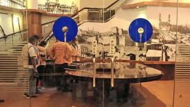
🏦 BankingSBISBIEst. 1 July 1955 (from the Imperial Bank of India)HQ MumbaiIndia’s largest bank Raises $500 Million Overseas
- State Bank of India (SBI) raised $500 million through a Regulation S bond issue.
- The bonds were issued through SBI’s London branch.
- Tenure: 5 years · Coupon rate: 5.25%.
- Regulation S bond: an international bond offered mainly to investors outside the US.
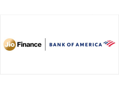
🏦 BankingBank of AmericaBank of AmericaHQ Charlotte, North Carolina, USAJio Financial Services HQ Mumbai to Acquire Up to 49.9% Stake in Jio Credit
- Jio Financial Services Ltd (JFSL) and Bank of America announced a strategic partnership.
- Bank of America will acquire up to 49.9% stake in Jio Credit Limited (JCL), currently a wholly owned NBFC subsidiary of JFSL.
- Total proposed investment: up to ₹18,268 crore (about $1.9 billion).
- Initially Bank of America gets about 26.5% equity; it can later rise to 49.9%.
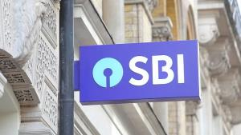
🏦 BankingSBI Uses AI to Underwrite Nearly ₹1 Lakh Crore MSME Loans in FY 2025-26
- SBI used Artificial Intelligence to underwrite nearly ₹1 lakh crore (₹1 trillion) of MSME loans in FY 2025-26.
- Shared by SBI MD Rama Mohan Rao Amara at the FICCI–IBAIBAIndian Banks’ Association, est. 1946, HQ MumbaiFICCI est. 1927, HQ New Delhi Conference in Mumbai.
- AI-based underwriting covered individual MSME loans of up to ₹5 crore.
- Loan underwriting = evaluating a borrower’s creditworthiness and repayment capacity before approving a loan.
🏦 BankingEazyDiner and IndusInd BankIndusInd BankFounded 1994HQ MumbaiRuPay launched by NPCI in 2012 Launch Lifetime-Free Credit Card Linked to UPI UPIUnified Payments InterfaceLaunched 2016 by NPCI
UPIUnified Payments InterfaceLaunched 2016 by NPCI
- IndusInd Bank and dining platform EazyDiner launched the EazyDiner IndusInd Bank Platinum RuPay Credit Card.
- The card is lifetime free.
- Being on the RuPay network, it can be linked with supported UPI apps.
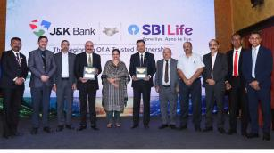
🏦 BankingSBI LifeSBI LifeSBI Life InsuranceFounded March 2001HQ Mumbai Insurance Ties Up with Jammu & Kashmir Bank
- SBI Life Insurance entered a strategic corporate agency partnership with Jammu & Kashmir Bank.
- J&K BankJ&K BankEst. 1938HQ Srinagar customers can buy SBI Life products through the bank’s 1,000-plus branches.
2Economy & Reports
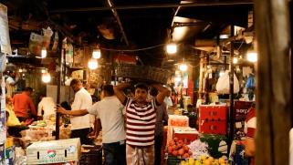
🎯 Likely QIndia’s WPIWPIWholesale Price IndexReleased by DPIIT (Office of the Economic Adviser)New base year 2022-23 Inflation Eases to 9.78% in July 2026
- WPI inflation fell to 9.78% in July, from 9.87% in June.
- The first month-on-month drop under the new WPI series with base year 2022-23.
- Compiled by the Office of the Economic Adviser (OEA), DPIITDPIITDepartment for Promotion of Industry and Internal TradeMinistry of Commerce and IndustryGI Registry works under it, Ministry of Commerce and Industry.
- Measures prices at the wholesale/bulk level, not prices paid by consumers.
- Items: 957 — Primary Articles 129, Fuel & Power 25, Manufactured Products 803.
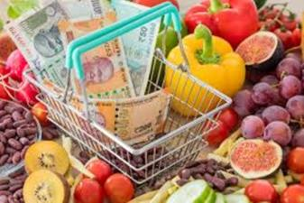
🎯 Likely QIndia’s Retail Inflation Rises to 4.45% in July 2026
- CPICPIConsumer Price IndexMeasures retail inflationReleased by NSO, MoSPIRBI target 4% (±2%) (retail) inflation rose to 4.45% in July 2026, from 4.38% in June.
- Second consecutive month above the RBI
 RBIReserve Bank of IndiaEst. 1 April 1935 (RBI Act 1934)Nationalised 1949HQ Mumbai’s 4% target.
RBIReserve Bank of IndiaEst. 1 April 1935 (RBI Act 1934)Nationalised 1949HQ Mumbai’s 4% target. - Current CPI series: 2024 = 100; base revised from 2012 to 2024 in February 2026.
- Weighted items: 358 (Goods 308 + Services 50).
- Compiled by the National Statistical Office (NSO), MoSPI; released monthly on the 12th of the next month.
- The new series was first released (for January 2026) on 12 February 2026.
Unemployment Rate Rises to 5.4% in April–June 2026
- Unemployment rate (age 15+) rose to 5.4% in the April–June 2026 quarter, from 5.0% in January–March.
- An increase of 0.4 percentage points.
- Source: Periodic Labour Force Survey (PLFSPLFSPeriodic Labour Force SurveyConducted by NSO, MoSPIMeasures employment and unemployment), released by MoSPI.
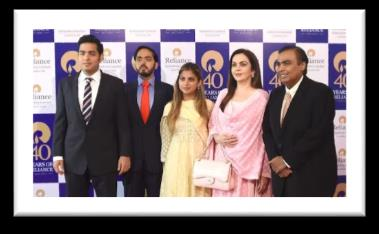
🎯 Likely QAmbani Family Retains No. 1 for Third Year: Hurun-Barclays List
- Barclays Private Clients Hurun India released the 2026 Most Valuable Family Businesses list.
- India’s top 300 family businesses are worth about ₹138 lakh crore ($1.46 trillion), up about 27.5% since 2024 — about ₹4,076 crore added per day.
- Ambani family retained No. 1 (third consecutive year) at about ₹25.83 lakh crore; flagship Reliance Industries.
- First-generation group: Adani family leads (₹19.6 lakh crore), then Sunil Bharti Mittal family (₹12.1 lakh crore) and Dilip Shanghvi family (₹4.55 lakh crore).
3Government, Schemes & Policy
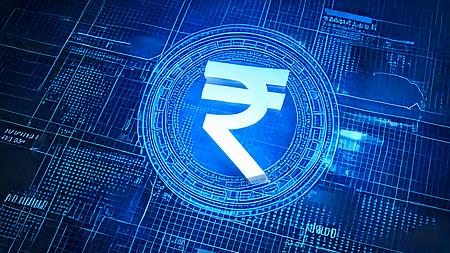
🏦 BankingGovernment Launches CBDC-Based DBT under PMGKAY
- CBDC-based Direct Benefit Transfer under PMGKAY launched on 14 August 2026 in Chandigarh and Dadra & Nagar Haveli.
- These became the first UT areas to cover all eligible PMGKAY beneficiaries through programmable Digital Rupee food-subsidy transfers.
- Earlier: subsidy → normal bank account. Now: subsidy → Digital Rupee (e₹) → beneficiary’s CBDC wallet, used to buy foodgrains from empanelled merchants.
- Earlier pilots of CBDC food subsidy: Puducherry and Gujarat.
- PMGKAY gives free foodgrains to beneficiaries under the National Food Security Act (NFSA), 2013; continued for 5 years from 1 January 2024.
- Covers two ration-card categories: Antyodaya Anna Yojana (AAY) and Priority Households (PHH).
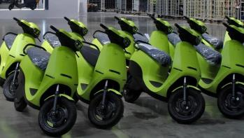
🎯 Likely QPM E-DRIVEPM E-DRIVEPM Electric Drive Revolution in Innovative Vehicle EnhancementEarlier EV scheme: FAME (Faster Adoption and Manufacturing of (Hybrid &) Electric Vehicles) Scheme Extended Till FY 2027-28
- The Ministry of Heavy Industries (MHI) extended PM E-DRIVE till 31 March 2028 (runs 1 April 2024 – 31 March 2028).
- Total outlay: ₹11,900 crore. Aims: faster EV adoption, charging infrastructure, EV manufacturing ecosystem.
- e-2W allocation raised by nearly ₹1,000 crore to ₹2,767 crore, for up to 45,79,120 vehicles; max ex-factory price ₹1.5 lakh.
- e-2W subsidy: ₹2,500 per kWh of battery, capped at ₹5,000 per vehicle.
- EMPS-2024 (1 April – 30 September 2024) has been subsumed into PM E-DRIVE.
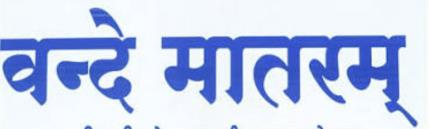
🎯 Likely QVande MataramVande MataramWritten by Bankim Chandra Chattopadhyay, part of his novel Anandamath (1882)Adopted as National Song on 24 January 1950 (same day as Jana Gana Mana) Bill Becomes Law
- President Droupadi Murmu gave assent to the Prevention of Insults to National Honour (Amendment) Bill, 2026.
- Vande Mataram now gets the same legal protection as Jana Gana Mana: intentionally stopping its singing, or disturbing an assembly where it is sung, is an offence.
- Earlier the Prevention of Insults to National Honour Act, 1971 covered only the National Anthem.
- Punishment: up to 3 years imprisonment, or fine, or both; second or later conviction: minimum 1 year.
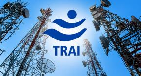
TRAI Begins Rollout of 1601-Series Numbers for Trusted Service Calls
- TRAI began a phase-wise rollout of the 1601-series numbering system for service and transactional voice calls.
- Meant for entities outside the BFSI sector and government organisations.
- Number series allotted by the Department of Telecommunications (DoT).
- Helps consumers identify genuine business calls; cannot be used for promotional or marketing calls.
- TRAI — set up under Section 3 of the TRAI Act, 1997 · Formed 20 February 1997 · HQ New Delhi · Chairperson Anil Kumar Lahoti.
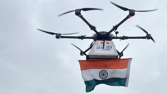
India PostIndia PostDepartment of Posts, Ministry of CommunicationsFounded 1854 Delivers Tiranga by Drone in Himachal Pradesh
- In a first-of-its-kind initiative, India Post delivered the National Flag by drone in Himachal Pradesh.
- Route: Mandi Head Post Office → Rehardhar Branch Post Office, on the eve of Independence Day 2026.
- Virtually inaugurated by Jyotiraditya M. Scindia, Union Minister for Communications and DoNER.
- The Tiranga was handed over to an Army veteran.
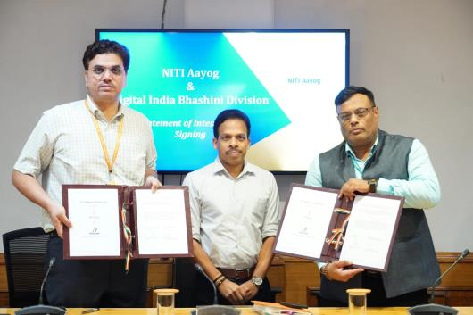
BHASHINIBHASHINIBhasha Interface for IndiaLaunched 2022 under MeitY (National Language Translation Mission)NITI Aayog est. 1 January 2015, replacing the Planning Commission and NITI Aayog Sign Statement of Intent on Multilingual AI
- Digital India BHASHINI Division (DIBD) and NITI Aayog signed a Statement of Intent (SoI).
- Goal: multilingual, voice-first AI for governance, access to services and communication with citizens in their own languages.
- Implemented through the “BHASHINI for Seva/Sanchalan” initiative; BHASHINI tech will be built into NITI Aayog’s platforms.
MakeMyTrip Partners with Ministry of Tourism for Guided Tours
- MakeMyTrip partnered with the Ministry of Tourism to offer 350+ guided tours across 60+ cities.
- Bookable on MakeMyTrip from Independence Day.
- Aligned with Incredible India and Dekho Apna Desh.
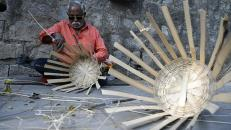
🎯 Likely QDPIITDPIITDepartment for Promotion of Industry and Internal TradeMinistry of Commerce and IndustryGI Registry works under it and MSME Ministry Sign MoU to Take India’s GIGIGoverned by the Geographical Indications of Goods (Registration and Protection) Act, 1999GI Registry in ChennaiIndia’s first GI: Darjeeling Tea (2004) Products Global
- The Ministry of MSME and DPIIT signed an MoU to boost commercialisation and market reach of Geographical Indication (GI) products.
- GI collectives and authorised users will be onboarded on ONDC (Open Network for Digital Commerce) and GeM (Government e-Marketplace).
- GI products will be promoted under a dedicated “Bharat GI” banner.
4Technology & AI
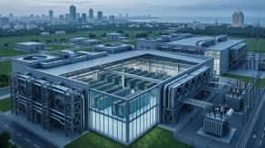
🎯 Likely QL&TL&TFounded 1938HQ MumbaiNVIDIA HQ Santa Clara, California to Build India’s Largest NVIDIA B300 AI Factory
- Larsen & Toubro (L&T) won a “Mega” order to build India’s largest single-cluster AI infrastructure — its entry into the AI Factory business.
- Hosted at Vyoma’s Chennai data-centre campus, Tamil Nadu; capacity for 10,000 NVIDIA B300 GPUs.
- Executed for Together AI, a US-based AI cloud company.
- Developed through Vyoma.AI (L&T’s AI cloud and hyperscale data-centre business) and LTN Compute (Vyoma.AI’s AI-infrastructure subsidiary).
- GPU = Graphics Processing Unit; GPUs give the computing power modern AI models need.
Meta Launches Open-Weight AI Model ‘Muse Glimmer’
- Meta launched Muse Glimmer, an open-weight AI model built mainly for agentic AI tasks (multi-step tasks with limited human help).
- Smaller than leading frontier models; runs on a Mac or PC with a single GPU.
- Chinese AI models: Kimi K3 – Moonshot AI · Qwen3.8-Max – Alibaba · V4-Flash – DeepSeek.
🎯 Likely QIIScIIScIndian Institute of Science, founded 1909, BengaluruThe Eighth Schedule lists 22 languages SPIRE Lab Releases SraVaani Speech AI Model for 65 Indian Languages
- IISc Bengaluru’s SPIRE Lab, with ARTPARK and support from Google, released SraVaani, a multilingual Automatic Speech Recognition (ASR) model.
- Supports 65 Indian languages and dialects: 20 Scheduled Languages + 45 regional languages and dialects.
- Converts speech to text and automatically identifies the spoken language.
- Built on data from Project Vaani, a large multilingual speech dataset of how people actually speak across India.
5Environment & Wildlife
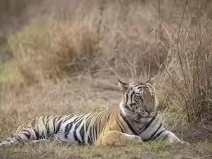
🎯 Likely QGujarat’s Deesa to Get Asia’s First Desert-Themed Night Safari & Zoo
- Deesa (Banaskantha district, Gujarat) will host Asia’s first desert-themed drive-through night safari and zoological park.
- Area about 103 hectares; estimated cost ₹542.14 crore.
- Approved by the Central Zoo Authority.
- Central Zoo Authority — oversees zoos · est. 1992 under the Wildlife (Protection) Act, 1972 · statutory body under MoEFCC · HQ New Delhi · affiliate member of WAZA.
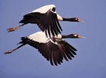
Ladakh Hosts First-Ever Black-Necked Crane Festival
- Ladakh held its first-ever Black-necked Crane Festival; the crane is the State Bird of Ladakh.
- Changthang Cold Desert Wildlife Sanctuary is its only breeding place in India.
- Scientific name Grus nigricollis · IUCN status Near Threatened.
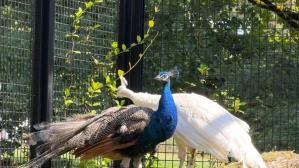
India Donates Five Peacocks to UN Office at Geneva
- India donated five peacocks to the United Nations Office at Geneva (UNOG).
- Handed over by India’s Permanent Representative in Geneva, Arindam Bagchi; received by UNOG Director-General Tatiana Valovaya.
- Scientific name Pavo cristatus.
6Appointments & Elections
🎯 Likely QGyanesh Bharti Appointed Chief Secretary of Andaman & Nicobar Islands
- The Ministry of Home Affairs appointed Gyanesh Bharti as Chief Secretary of Andaman and Nicobar Islands.
- He was serving as Deputy Election Commissioner in the Election Commission of India.
- A&N Islands: formed 1 November 1956 · capital Sri Vijaya Puram (Port Blair) · Lieutenant Governor Devendra Kumar Joshi.
- National parks include Mahatma Gandhi Marine, Mount Harriet (now Mount Manipur), Saddle Peak, North/Middle/South Button Island, Rani Jhansi Marine, Campbell Bay, Galathea.
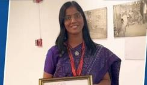
Dr Bhooma VG Selected as Vice-Chancellor of AIPSI, MauritiusMauritiusCapital Port LouisCurrency Mauritian rupee
- Dr Bhooma VG was selected Vice-Chancellor of the Atal Bihari Vajpayee Institute of Public Service and Innovation (AIPSI) in Mauritius.
- Announced by India’s Ministry of External Affairs.
Indriya Names Krithi Shetty Southern Brand Ambassador
- Indriya, the jewellery brand of the Aditya Birla Group, named actor Krithi Shetty its Brand Ambassador for southern markets.
- Announced ahead of the Varalakshmi festival (Varalakshmi campaign).
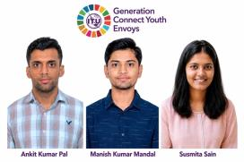
3 Indian Sanchar Mitras Selected as ITU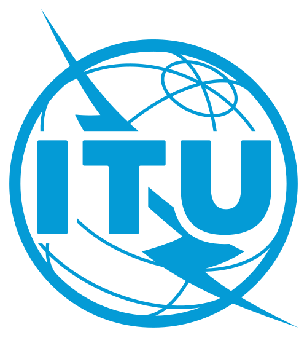
ITUInternational Telecommunication UnionUN agency for ICTEst. 1865HQ Geneva Generation Connect Youth Envoys
- DoT facilitated the selection of three Sanchar Mitras — Ankit Kumar Pal, Manish Kumar Mandal, Susmita Sain — as Generation Connect Youth Envoys (GCYE).
- An initiative of the International Telecommunication Union (ITU), letting young people join discussions on ICTs, digital transformation, connectivity and emerging tech.
- ITU: UN specialised agency for ICT · formed 17 May 1865 · HQ Geneva · Secretary-General Doreen Bogdan-Martin.
András Baka Elected President of Hungary
- Hungary’s Parliament elected former Supreme Court chief András Baka as President.
- Backed by the governing TISZA Party, led by Prime Minister Péter Magyar.
- Hungary: capital Budapest · currency Forint.
7International
🎯 Likely QLebanonLebanonCapital BeirutCurrency Lebanese pound Becomes First Arab Country to Abolish Death Penalty
- Lebanon’s Parliament abolished the death penalty, replacing it with life imprisonment with aggravated hard labour.
- Lebanon is the first Arab country to formally abolish capital punishment.
- Venezuela was the first country in the world to permanently abolish the death penalty for all crimes.
India Attends Côte d’IvoireCôte d’IvoireOfficial capital Yamoussoukro; Abidjan is the economic capitalCurrency West African CFA franc’s 66th Independence Day
- MoS External Affairs Kirti Vardhan Singh attended Côte d’Ivoire’s 66th Independence Day in Abidjan.
- Observed on 7 August, marking independence from France in 1960.
🏦 BankingRBIRBIReserve Bank of IndiaEst. 1 April 1935 (RBI Act 1934)Nationalised 1949HQ Mumbai Governor Co-Chairs BRICSBRICSBegan as BRIC in 2009; South Africa joined in 2010New Development Bank HQ Shanghai Finance Meeting in Jaipur
- FM Nirmala Sitharaman
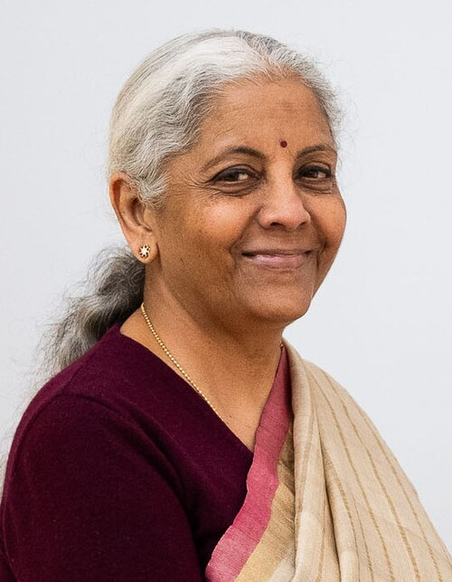
Nirmala SitharamanUnion Finance Minister and RBI Governor Sanjay Malhotra co-chaired the BRICS Finance Ministers and Central Bank Governors (FMCBG) meeting in Jaipur, Rajasthan. - The first FMCBG meeting under India’s BRICS Chairship 2026.
8Sports
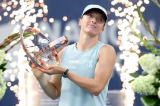
🎯 Likely QCanadian Open 2026: Swiatek and Shelton Win Singles Titles
- Officially the National Bank Open presented by Rogers.
- Women: Iga Swiatek (Poland) won in Toronto; runner-up Elena Rybakina (Kazakhstan).
- Men: Ben Shelton (USA) won in Montreal; runner-up Brandon Nakashima (USA).
🎯 Likely QIndia Wins Commonwealth Fencing Championship 2026
- India was overall champion at the Commonwealth Fencing Championship 2026 in Lagos, NigeriaNigeriaCapital Abuja (Lagos is the largest city)Currency Naira.
- Total 35 medals (Under-23 + Senior): 13 gold, 8 silver, 14 bronze.
- India also won the Wilkinson Sword Trophy, given by the Commonwealth Fencing Federation (CFF) for the best overall performance.
- Per the Fencing Association of India, India’s first Commonwealth Overall Championship title.
Sports Ministry Suspends Recognition of TTFI
- The Ministry of Youth Affairs and Sports suspended recognition of the Table Tennis Federation of India (TTFI) over governance issues.
- Main reason: failure to hold elections on time.
- The Indian Olympic Association (IOA) has been asked to form an Ad-hoc Committee to run table tennis.
- IOA: founded 1927 · HQ New Delhi · President P T Usha.
9Defence
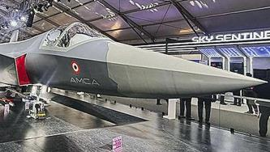
🎯 Likely QReliance and Rolls-Royce to Co-Develop Engine for AMCAAMCADesigned by the Aeronautical Development Agency (ADA) under DRDO
- Reliance Industries and UK-based Rolls-Royce will jointly develop an indigenous combat-aircraft engine for the Advanced Medium Combat Aircraft (AMCA).
- AMCA: India’s proposed fifth-generation stealth, twin-engine fighter for the IAF.
- The initial AMCA version is planned to use the US-made GE F414 engine.
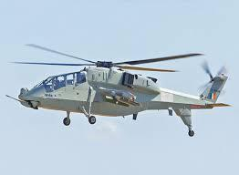
🎯 Likely QHAL Partners with Adani Defence and BEML for Prachand Fuselages
- HAL partnered with Adani Defence Systems and Technologies (ADSTL) and BEML to make fuselages for the Light Combat Helicopter (LCH) ‘Prachand’.
- BEML → 48, Adani Defence → 42; total 90 fuselage structures.
Defence Ministry Signs ₹1,577 Crore Contracts for Loitering Munitions
- MoD signed contracts worth ₹1,577 crore for Loitering Munition Systems for the Indian Army.
- Contracts with Tata Advanced Systems Ltd (TASL) and NIBE Private Ltd, in the presence of Defence Secretary Rajesh Kumar Singh.
- A loitering munition flies over an area, searches for and identifies a target, then attacks it directly.
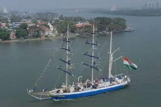
INS Sudarshini Reaches the Azores during Lokayan 2026
- Sail training ship INS Sudarshini entered Ponta Delgada, Azores (Portugal) as part of Lokayan 2026.
- Arrived after a 19-day trans-Atlantic voyage from Boston, USA — its second Atlantic crossing.
- Lokayan: 10 months, 22,000 nautical miles, 13 countries, 18 ports.
- Built by Goa Shipyard Limited.
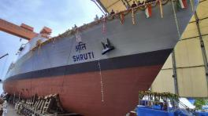
GRSEGRSEHQ Kolkata Launches Second Next Generation OPV ‘Shruti’
- Garden Reach Shipbuilders & Engineers (GRSE) launched its second Next Generation Offshore Patrol Vessel (NGOPV), ‘Shruti’.
- The first was ‘Sanghmitra’, launched in May 2026.
- GRSE is a PSU under the Ministry of Defence.
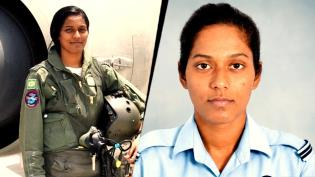
🎯 Likely QBhawana Kanth Becomes First Woman to Complete IAF’s Fighter Combat Leader Course
- Squadron Leader Bhawana Kanth became the first woman IAF fighter pilot to complete the Fighter Combat Leader (FCL) Course.
- Conducted at the Tactics and Air Combat Development Establishment (TACDE), Gwalior.
- She is from Darbhanga, Bihar; part of India’s first batch of women fighter pilots with Avani Chaturvedi and Mohana Singh.
- First woman fighter pilot in the Republic Day Parade (2021); also in the Republic Day Flypast 2024.
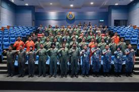
🎯 Likely QIndia and MalaysiaMalaysiaCapital Kuala LumpurCurrency Ringgit Hold Air Exercise Udara Shakti 2026
- The IAF and Royal Malaysian Air Force held Udara Shakti 2026 at Subang Air Base, Malaysia.
- India–Malaysia exercises: Army → Harimau Shakti · Navy → Samudra Laksamana · Air Force → Udara Shakti.
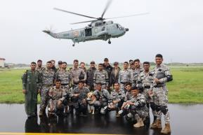
Indian Navy–US Navy EOD Exercise 2026 Begins in Kochi
- The Indian Navy–US Navy Explosive Ordnance Disposal (EOD) Exercise 2026 is under way at the Southern Naval Command, Kochi.
- Edition: 8th. Joint salvage and EOD exercises have been held since 2005.
10Important Days
🎯 Likely QWorld Lion Day — 10 August
- Observed every year on 10 August for lion conservation, habitat protection and threats to wild lions.
- Scientific name Panthera leo · IUCN status Vulnerable.
- India has the Asiatic Lion; main habitat the Greater Gir Landscape, Gujarat; Gir National Park and Wildlife Sanctuary is the core.
- Project Lion: announced by PM Modi on 15 August 2020.
- Asiatic lion population (2025): 891; range nearly 35,000 sq km across 11 districts.
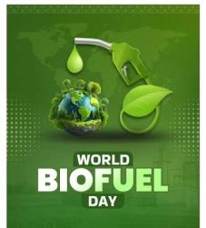
World Biofuel Day — 10 August
- Observed every year on 10 August to promote biofuels as clean, renewable alternatives to fossil fuels.
- First observed by the Ministry of Petroleum and Natural Gas in August 2015.
- Commemorates Sir Rudolf Diesel running an engine on peanut oil on 9 August 1893.
International Youth Day — 12 August
- Observed every year on 12 August.
- 2026 theme: “Different Contexts, Common Aspirations”.
- India’s National Youth Day is 12 January, birth anniversary of Swami Vivekananda; declared in 1984, first celebrated in 1985.
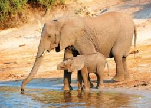
🎯 Likely QWorld Elephant Day — 12 August
- Observed every year on 12 August for Asian and African elephants.
- India has about 60% of the world’s Asian elephants — 27,312 (2017 census) — and 138 identified elephant corridors.
- Project Elephant: centrally sponsored scheme launched in February 1992.
- Asian elephant IUCN status: Endangered.
- Declared India’s National Heritage Animal on 22 October 2010.
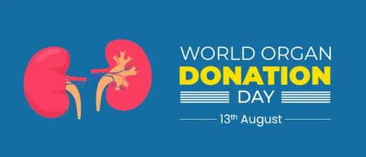
World Organ Donation Day — 13 August
- Observed every year on 13 August to raise awareness about organ and tissue donation and honour donors and their families.
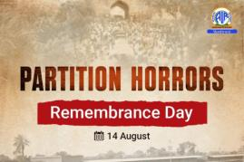
🎯 Likely QPartition Horrors Remembrance Day — 14 August
- Observed every year on 14 August in India.
- Remembers those who lost their lives, were forced from their homes, or suffered violence and displacement in the 1947 Partition.
- The Government decided in 2021 to observe the day.
11Science, Space & Awards
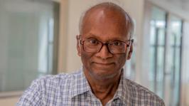
🎯 Likely QPhysicist Deepak Dhar Wins 2026 Dirac Medal
- Indian theoretical physicist Deepak Dhar is a co-recipient of the 2026 Dirac Medal.
- Awarded by the Abdus Salam International Centre for Theoretical Physics (ICTP), Trieste, Italy; first given in 1985.
- Named after Paul A. M. Dirac, who shared the 1933 Physics Nobel with Erwin Schrödinger.
- Other recipients: Bernard Derrida, Marc Mezard, Haim Sompolinsky.
🎯 Likely QNASANASAEst. 1958HQ Washington, D.C.India signed the Artemis Accords in June 2023 Invites ISRO ISROIndian Space Research OrganisationEst. 1969HQ BengaluruUnder Department of Space to Join ‘Moon Base’ Programme
ISROIndian Space Research OrganisationEst. 1969HQ BengaluruUnder Department of Space to Join ‘Moon Base’ Programme
- NASA invited ISRO to join its Moon Base programme for a long-term human presence on the Moon, near the lunar South Pole.
- Invitation made at the 9th India–US Civil Space Joint Working Group meeting at ISRO HQ, Bengaluru.
- Part of NASA’s broader Artemis programme: habitation, research infrastructure, communication and power systems.
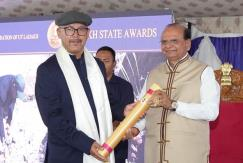
Dr Padma Gurmet Honoured with UT Ladakh State Award 2025
- Dr Padma Gurmet, Director of the National Institute of Sowa-RigpaSowa-RigpaRecognised as an AYUSH system in 2010 (NISR), Leh, received the UT Ladakh State Award 2025.
- Honoured for preserving, promoting and developing Sowa-Rigpa in Ladakh.
- Presented by Ladakh LG Vinai Kumar Saxena.
- Sowa-Rigpa: traditional medicine of the Himalayan region, also called the Tibetan system of medicine.
12Obituaries & Books
Historian Sumit Sarkar Passes Away at 87
- Eminent Marxist historian of modern India Sumit Sarkar passed away at 87.
- Known for work on the national movement, colonial India and social history.
- Books: Swadeshi Movement in Bengal, 1903–1908 (1973), Modern India (1989), Writing Social History (1998).
Former Nuclear Scientist M. P. Parameswaran Passes Away
- M. P. Parameswaran, former nuclear scientist, writer and people’s-science activist, passed away.
- Worked at the Bhabha Atomic Research Centre (BARC), Mumbai.
- Known for his “Fourth World” theory, set out in “Fourth World: Dream and Reality”.
Former Chinese Premier Zhu Rongji Passes Away at 97
- Zhu Rongji, Premier of China from 1998 to 2003 under President Jiang Zemin, died at 97.
- Earlier: Vice-Premier, Governor of the People’s Bank of China, and Mayor of Shanghai.
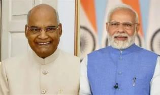
🎯 Likely QPM Modi Releases Ram Nath KovindRam Nath KovindEarlier Governor of Bihar’s Autobiography
- PM Narendra Modi released former President Ram Nath Kovind’s autobiography, “Triumph of the Indian Republic: My Life, My Struggles”.
- Kovind was the 14th President of India (2017–2022); succeeded Pranab Mukherjee, succeeded by Droupadi Murmu.
13Self-test
Answer out loud first, then click to check. Re-test the ones you missed tomorrow.
SBI’s $500 million bond — type, branch, tenure and coupon?
Regulation S bond via London branch; 5 years at 5.25%
Bank of America’s stake in Jio Credit — initial and maximum?
26.5% initially, up to 49.9% (up to ₹18,268 crore)
Up to what loan size did SBI use AI underwriting for MSMEs?
₹5 crore per loan (≈ ₹1 lakh crore total in FY26)
Which network is the EazyDiner IndusInd card on, and why does it matter?
RuPay — so it can be linked to UPI
WPI inflation July 2026, base year and compiling office?
9.78%; 2022-23; Office of the Economic Adviser, DPIIT
CPI inflation July 2026, base year and number of items?
4.45%; 2024 = 100; 358 items (308 goods + 50 services)
Unemployment rate Apr–Jun 2026 and its survey?
5.4% (from 5.0%); PLFS, MoSPI
Who tops the Hurun-Barclays family list, and who leads first-generation families?
Ambani family (₹25.83 lakh cr); Adani family
Where was CBDC-based DBT under PMGKAY launched on 14 Aug 2026?
Chandigarh and Dadra & Nagar Haveli
PM E-DRIVE: ministry, new end date and max e-2W subsidy?
Ministry of Heavy Industries; 31 March 2028; ₹5,000 (₹2,500/kWh)
Which Act was amended to protect Vande Mataram, and the max punishment?
Prevention of Insults to National Honour Act, 1971; 3 years
Who allotted the 1601 number series?
Department of Telecommunications (DoT); TRAI is rolling it out
India Post drone Tiranga route?
Mandi HO → Rehardhar BO, Himachal Pradesh
Banner for GI products on ONDC and GeM?
“Bharat GI”
L&T AI factory — location, GPUs and client?
Vyoma’s Chennai campus; 10,000 NVIDIA B300; Together AI
SraVaani supports how many languages, and from which dataset?
65 (20 scheduled + 45 others); Project Vaani
Asia’s first desert-themed night safari — where?
Deesa, Banaskantha district, Gujarat (₹542.14 crore)
Only breeding place of the Black-necked Crane in India?
Changthang Cold Desert Wildlife Sanctuary, Ladakh
New Chief Secretary of A&N Islands and his previous post?
Gyanesh Bharti; Deputy Election Commissioner
First Arab country to abolish the death penalty?
Lebanon (first in the world for all crimes: Venezuela)
Canadian Open 2026 singles winners?
Iga Swiatek (women, Toronto); Ben Shelton (men, Montreal)
India’s medals and trophy at the Commonwealth Fencing Championship?
35 (13-8-14); Wilkinson Sword Trophy; Lagos
Who will co-develop the AMCA engine with Reliance?
Rolls-Royce (UK)
Prachand fuselage split between BEML and Adani Defence?
BEML 48 + Adani 42 = 90
INS Sudarshini’s port in Portugal, and Lokayan’s length?
Ponta Delgada, Azores; 10 months, 22,000 nm, 13 countries, 18 ports
First woman to complete IAF’s Fighter Combat Leader course, and where?
Sqn Ldr Bhawana Kanth; TACDE Gwalior
India–Malaysia exercises for Army, Navy and Air Force?
Harimau Shakti; Samudra Laksamana; Udara Shakti
Where was the first BRICS FMCBG meeting under India’s 2026 Chairship?
Jaipur, Rajasthan
Asiatic lion population (2025) and Project Lion announcement date?
891; 15 August 2020
Why is World Biofuel Day on 10 August?
Marks Rudolf Diesel’s peanut-oil engine run (9 Aug 1893); first observed 2015
International Youth Day 2026 theme?
Different Contexts, Common Aspirations
When was the elephant declared National Heritage Animal?
22 October 2010
Who awards the Dirac Medal, and where is it based?
ICTP, Trieste, Italy
Where was NASA’s Moon Base invitation to ISRO made?
9th India–US Civil Space JWG, ISRO HQ Bengaluru
Title of Ram Nath Kovind’s autobiography?
Triumph of the Indian Republic: My Life, My Struggles
⚡ Rapid Revision
- SBI $500 mn Reg S bond (London, 5 yr, 5.25%) · BofA up to 49.9% of Jio Credit (26.5% first, ₹18,268 cr) · SBI AI MSME loans ≈ ₹1 lakh cr (≤ ₹5 cr each).
- EazyDiner IndusInd RuPay card, lifetime free, UPI-linked · SBI Life + J&K Bank corporate agency (1,000+ branches).
- WPI 9.78% (base 2022-23, 957 items, OEA/DPIIT) · CPI 4.45% (base 2024, 358 items, NSO/MoSPI) · Unemployment 5.4% (PLFS).
- Hurun-Barclays: Ambani No. 1 (3rd year, ₹25.83 lakh cr); first-gen: Adani → Mittal → Shanghvi.
- CBDC DBT under PMGKAY: Chandigarh + DNH (14 Aug) · PM E-DRIVE to 31 Mar 2028, ₹11,900 cr, e-2W ₹2,500/kWh max ₹5,000.
- Vande Mataram protected like Jana Gana Mana (1971 Act; 3 yrs) · TRAI 1601 series (DoT-allotted, no promos) · India Post drone Tiranga, Mandi.
- BHASHINI + NITI Aayog SoI · MakeMyTrip + Tourism 350 tours, 60 cities · MSME + DPIIT GI MoU — “Bharat GI” on ONDC/GeM.
- L&T AI factory: 10,000 NVIDIA B300, Chennai, for Together AI · Meta Muse Glimmer · IISc SraVaani 65 languages (Project Vaani).
- Deesa (Gujarat) desert night safari, CZA 1992 · Ladakh Black-necked Crane fest (Changthang) · 5 peacocks to UNOG.
- Gyanesh Bharti CS of A&N · Bhooma VG VC of AIPSI Mauritius · Krithi Shetty for Indriya · 3 ITU youth envoys · András Baka President of Hungary.
- Lebanon first Arab country to end death penalty · Côte d’Ivoire 66th I-Day (7 Aug) · BRICS FMCBG Jaipur.
- Swiatek (Toronto) + Shelton (Montreal) · India Commonwealth Fencing champion, 35 medals, Wilkinson Sword (Lagos) · TTFI suspended.
- Reliance + Rolls-Royce AMCA engine · Prachand fuselages BEML 48 + Adani 42 · ₹1,577 cr loitering munitions (TASL, NIBE).
- INS Sudarshini at Azores (Lokayan) · GRSE NGOPV Shruti · Bhawana Kanth FCL course (TACDE Gwalior) · Udara Shakti (Subang) · EOD 8th ed. Kochi.
- Days: 10 Aug Lion + Biofuel · 12 Aug Youth + Elephant · 13 Aug Organ Donation · 14 Aug Partition Horrors.
- Deepak Dhar Dirac Medal (ICTP Trieste) · NASA invites ISRO to Moon Base · Padma Gurmet Ladakh award (Sowa-Rigpa).
- Died: Sumit Sarkar (87), M. P. Parameswaran, Zhu Rongji (97) · Book: Kovind — “Triumph of the Indian Republic”.
End of August 2026 · Class 5